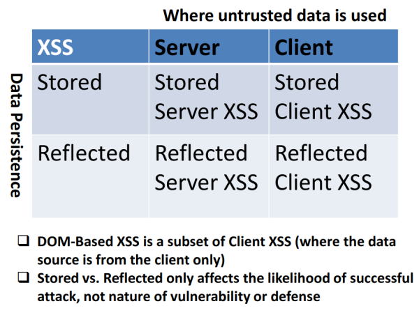

Classes of XSS
Classes of XSS
Though there are different ways of classifying XSS flaws that some professionals will employ, the most common way of categorizing them is as:
Classification 1
| Reflected (Type 2) | Stored (Type 1) | DOM-Based (Type 0) |
|---|
| Not-Persistent | Persistent | Not-Persistent/Persistent |
| Input processed Server-side
Input given by Client | Input Processed Server Side
Input Stored Server Side | Input processed client-side
(Input given by Client OR
Input Stored Server Side)
|
Classification 2
There is also this new classification from
https://owasp.org/www-pdf-archive/Unraveling_some_Mysteries_around_DOM-based_XSS.pdfServer XSS• Server XSS occurs when
Untrusted data is included in the generated response(HTML/JavaScript) The entire vulnerabile code is in server-side code, and the browser is simply rendering the response and executing any valid script embedded in it.
• The
source payload could be from:
◇ request → Reflected Server XSS (Type 1)
◇ stored location → Stored Server XSS (Type 2)
Client XSS• Client XSS occurs when
Untrusted data is NOT included in the generated response(HTML/JavaScript) but the Untrusted data is added to DOM (or eval’d) through unsafe JavaScript call. So it is JavaScript that has added the
source payload to the page, rather than it being in the page at that location when it was first loaded in the browser.
• The
source of the data could be from:
◇ request → Reflected Client XSS
◇ stored location → Stored Client XSS
• DOM Based XSS is simply a subset of Client XSS
◇ DOM Based XSS can be both Reflected or Stored
◇ There are Client XSS vulnerabilities that are not DOM based XSS since there are some Javascript Sinks that does not refer to DOM object (
here for more)
Non-Classes of XSS:They could sounds like classes of Cross-Site Scripting but they are not Web Application flaw
•
Universal Cross-Site Scripting (UXSS) → It is a method of injecting JavaScript by means of exploiting a separate tool. The most common UXSS targets are, the browser and associated plugins.
•
Self-XSS → It is an attack that involves tricking victims into copying or typing commands into the address bar that lead to adversary-controlled JavaScript execution